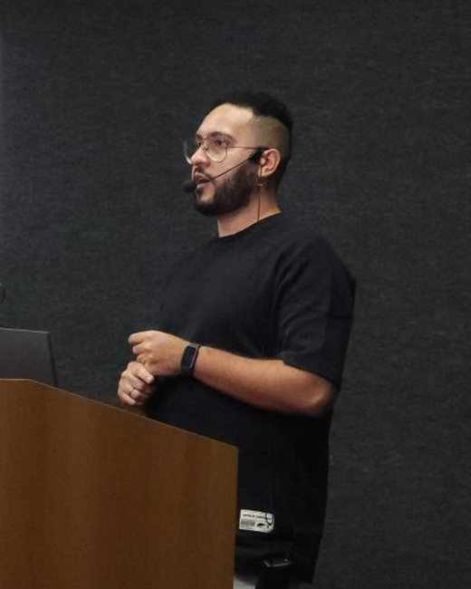
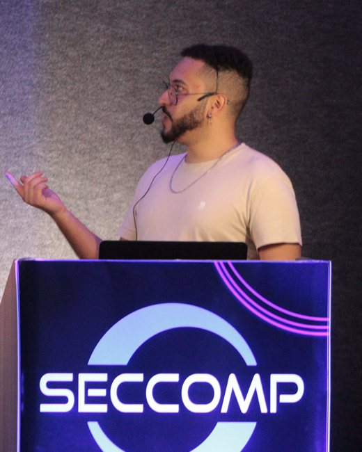
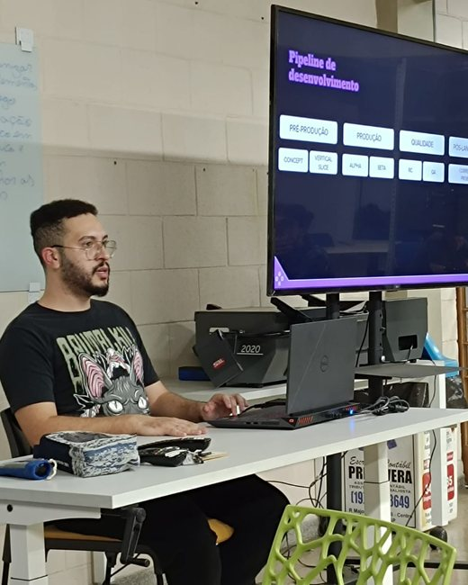

I make games where gameplay, systems and setting work as one thing, so each mechanic reinforces the game world and the player's experience. My approach is practical and iterative: prototype, playtest, adjust, repeat. Most of my work lives in XR, UGC and multiplayer, from development to Live Ops. Faço jogos em que gameplay, sistemas e ambientação funcionam como uma coisa só, em que cada mecânica reforça o mundo do jogo e a experiência do jogador. Minha abordagem é prática e iterativa: prototipar, playtestar, ajustar, repetir. A maior parte do meu trabalho vive em XR, UGC e multiplayer, do desenvolvimento ao Live Ops.
I've been making games professionally since 2022. I joined ARVORE in 2021 as IT Tech Support and made the transition into Game Design from inside the studio, shipping titles for Meta Quest, Horizon Worlds and Holoride: Blumhouse Horrorverse (as Lead Game/Level Designer), The Office World, Universal Monsters Arena, YUKI MRcade, Pixel Ripped 1995: On the Road and Coffee Fest (as Lead Game Designer). The work spans initial concepts, level design, balancing, documentation (GDD, LDD) and Live Ops. Faço jogos profissionalmente desde 2022. Entrei na ARVORE em 2021 como IT Tech Support e fiz a transição para o Game Design de dentro do estúdio, lançando títulos para Meta Quest, Horizon Worlds e Holoride: Blumhouse Horrorverse (como Lead Game/Level Designer), The Office World, Universal Monsters Arena, YUKI MRcade, Pixel Ripped 1995: On the Road e Coffee Fest (como Lead Game Designer). O trabalho cobre conceitos iniciais, level design, balanceamento, documentação (GDD, LDD) e Live Ops.
I hold a Tech Degree in Digital Games from FATEC Americana. During college, I researched Serious Games as a Scientific Initiation student and founded GAMINP, a study and incentive group for game development. Sou formado em Tecnologia em Jogos Digitais pela FATEC Americana. Durante a faculdade, pesquisei Serious Games como aluno de Iniciação Científica e fundei o GAMINP, um grupo de estudo e incentivo ao desenvolvimento de jogos.
I love game jams (most of my personal projects were born in one) and I'm always learning: game and level design, UI tech art, production and beyond. I'm based in São Paulo, Brazil and work in English and Portuguese. Off the clock, you'll usually find me playing games, going out to eat with friends, reading or watching series. Adoro game jams (a maioria dos meus projetos pessoais nasceu em uma) e estou sempre aprendendo: game e level design, UI tech art, produção e além. Moro em São Paulo e trabalho em inglês e português. Fora do expediente, é provável que eu esteja jogando, comendo fora com os amigos, lendo ou maratonando séries.
Lead Game Designer on Coffee Fest. Development and Live Ops of multiplayer UGC games (Horizon Worlds) and immersive VR/MR experiences, working closely with art, engineering and production teams. Lead Game Designer no Coffee Fest. Desenvolvimento e Live Ops de jogos multiplayer UGC (Horizon Worlds) e experiências imersivas VR/MR, atuando de forma colaborativa com as equipes de arte, engenharia e produção.
Shipped and supported Blumhouse Horrorverse, The Office World, Universal Monsters Arena and YUKI MRcade: from combat features and level design to playtests and Live Ops. Lancei e dei suporte a Blumhouse Horrorverse, The Office World, Universal Monsters Arena e YUKI MRcade: de features de combate e level design a playtests e Live Ops.
Kept the studio running while making my transition into design, taking my first design steps on Pixel Ripped 1995: On the Road. Mantive o estúdio rodando enquanto fazia minha transição para o design, dando meus primeiros passos de design em Pixel Ripped 1995: On the Road.
Hardware, networking and internal support at one of Brazil's largest tech e-commerce companies. Hardware, redes e suporte interno em um dos maiores e-commerces de tecnologia do Brasil.